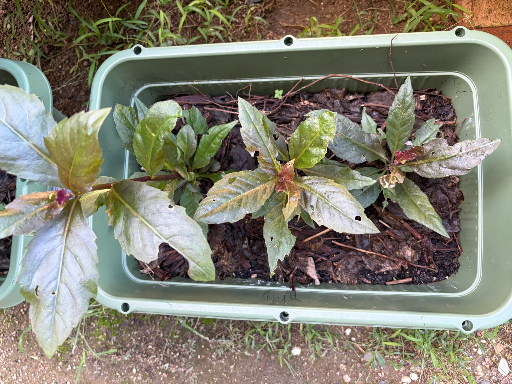

植え替えから20日、3本の葉が広がる
8月30日に、3号ポットで発根した金時草3本をプランターへ植え替えてから、20日が経ちました。9月5日には、それぞれの苗が葉を広げながらも、苗と苗の間には土が広く見えていました。その後も育ち続け、今は大きな葉が占める範囲が増えています。
特に、最初から3号ポットで育てていた一番左の苗が、さらに大きくなりました。9月5日の時点でも3本の中で最も葉が充実していましたが、今回はプランターの縁を越えて葉を広げ、ひときわ存在感があります。
中央と右の2本も、大きな葉を付けています。3本の大きさには違いがあるものの、途中でポットへ移して生き残った苗も、プランターで生育を続けてくれています。
左の苗は、プランターの外まで葉を広げる
一番左の苗は、上向きの葉だけでなく、左側や手前へ大きく伸びる葉が目立ちます。長い葉がプランターの縁を越え、外側へ張り出すようになりました。9月5日にはプランター内に収まっていた葉の広がりが、さらに大きくなっています。
手前へ伸びる葉は長さも幅もあり、中央の葉脈から左右へ広がる葉の形がはっきりしています。葉の先は細くとがり、縁には細かなぎざぎざが見られます。葉によって向きが異なり、緑色の部分と紫色を帯びた部分が交じっています。
大きく張り出した枝先だけでなく、株元に近い内側にも葉が重なっています。上へ立つ葉や横へ開く葉が集まり、前回よりも株全体の広がりが感じられる姿になりました。
枝先には赤紫色の小さな葉も付いています。大きく開いた葉の間に、まだ小さな葉が見え、これからの成長も楽しみです。
中央の苗も、大きな葉を広げている
中央の苗は、茎の先を中心に葉を放射状に広げています。9月5日には細長い葉が目立っていましたが、今回は左右へ伸びる葉に幅があり、株の中心を囲むように大きな葉が開いています。
左へ広がる葉と、右手前へ伸びる葉が特に目立ちます。上向きに立つ葉や手前へ伸びる葉もあり、葉同士が部分的に重なっています。左の苗ほど外側へ大きく張り出してはいませんが、中央の苗も葉の存在感が増してきました。
葉色は一様ではなく、明るい緑色の葉と、紫色や褐色を帯びた葉が交じっています。葉の中央には太い葉脈が通り、その周囲にも細かな葉脈が見られます。
中心部には赤紫色の小さな葉がまとまっています。まだ十分に開いていない葉もあり、大きな葉に囲まれながら枝先の成長が続いている様子です。
右の苗は、上と横へ葉を伸ばす
右の苗は、上向きに立つ長い葉と、右側へ大きく開く葉が目立ちます。手前へ伸びる葉もあり、茎の先を中心に、異なる方向へ葉を広げています。
9月5日には比較的コンパクトな姿でしたが、今回は一枚一枚の葉が大きく、隣の中央の苗との間でも葉が近づいています。左の苗ほどの広がりはありませんが、右の苗も葉を保ち、育ち続けています。
枝先には赤紫色の小さな葉があり、大きく開いた葉との大きさや色の違いがはっきりしています。上向きの葉は緑色が強く、横へ開く葉には紫色を帯びた部分も見られます。
途中でしおれ始めてからポットへ移した苗の一つですが、今はプランターで大きな葉を広げる姿を見ることができ、うれしく思います。
葉の穴や欠けは残っている
葉が大きくなる一方で、穴や縁の欠けも引き続き見られます。左の苗には、葉の途中に丸みのある穴や、縁が大きく欠けた葉があります。手前へ伸びる長い葉にも、小さな穴や先端付近の傷みが残っています。
中央の苗では、上向きの葉や左右へ広がる葉に穴があり、葉の縁が不規則に欠けた部分も見られます。右の苗にも穴の開いた葉や、縁が欠けた葉があります。
9月5日にも葉の傷みはありましたが、今回もきれいな葉ばかりではありません。それでも、大きな葉が広がり、枝先には小さな葉が付いています。傷んだ葉を残しながらも、株全体としては生育を続けているように感じます。
葉の向きによって、緑色が強く見えるものと、紫色を帯びて見えるものがあります。茎や枝先にも赤紫色があり、金時草らしい色合いが目を引きます。
左の苗を中心に、成長の違いが見えてきた
最初から3号ポットで育てた左の苗は、9月5日に続いて、今回も3本の中で一番大きく育っています。プランターの外へ葉を広げるまでになり、中央と右の苗との大きさの違いが、さらに分かりやすくなりました。
中央と右の苗も、それぞれ大きな葉を広げ、枝先には小さな葉を付けています。まだプランター全体が葉で覆われるほどではなく、株の周囲には土や落ち葉が見えますが、植え替え直後から少しずつ姿が変わってきました。
今のところ、花や蕾は見当たりません。まずは3本が枝葉を充実させ、プランターで育ち続けてくれることを願っています。左の苗の広がりと、中央・右の苗の成長を楽しみにしながら、これからも様子を記録していきたいです。
